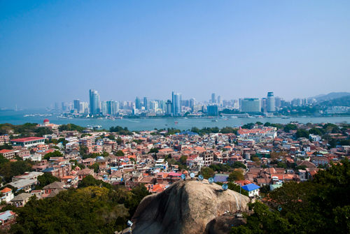

鼓浪屿
|  |
景点介绍鼓浪屿（Kulangsu），福建省厦门市思明区的一个小岛，是著名的风景区。原鼓浪屿区后被撤销行政区并入思明管辖，位于厦门岛西南隅，与厦门岛隔海相望。原名圆沙洲、圆洲仔，因海西南有海蚀洞受浪潮冲击，声如擂鼓，明朝雅化为今名。2017年7月8日申遗成功，成为中国第52项世界遗产项目。 由于历史原因，中外风格各异的建筑物在此地被完好地汇集、保留，有“万国建筑博览”之称。龙头路商业街诸多火热商铺都有贩卖各种厦门特色小吃，此岛还是音乐的沃土，人才辈出，钢琴拥有密度居全国之冠，又得美名“钢琴之岛”、“音乐之乡”，是一个非常浪漫的旅游景点。有乡贤林承强题联赞曰：鼓浪悬帆今胜昔，堆金积玉慨而慷。 |